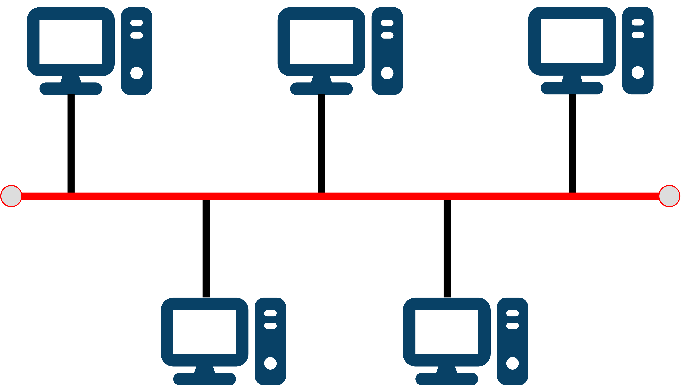

State two advantages of connecting computers together into networks. [2]
State two advantages of connecting computers together into networks. [2]
Tap/click to reveal
Any two from:
• Sharing files and resources (including devices like printers) across the network is a lot easier ✓
• The computers can be centrally managed, so software can be updated remotely on all computers at once ✓
• Accounts can be stored centrally, so users can log in from any device on the network ✓
• Other reasonable advantage ✓
 What does a switch do? [1]
What does a switch do? [1]
Tap/click to reveal Sends data packets to devices on the network. ✓
 Give three advantages of a star topology. [3]
Give three advantages of a star topology. [3]
Tap/click to reveal
Any three from:
• There are less data collisions on star topology networks than on bus topology networks ✓
• Data transmission is usually quicker on star topology networks ✓
• Star topology networks are more secure because the data is only sent to its intended recipient ✓
• It is easier to add new devices to a star topology network ✓
 Draw five computers connected in a bus topology network. [2]
Draw five computers connected in a bus topology network. [2]
Tap/click to reveal

Central bus cable ✓
Everything else correct ✓
 What is a network protocol? [2]
What is a network protocol? [2]
Tap/click to reveal
A set of rules ✓
for how devices communicate across a network ✓
Table 1 shows the protocols in three of the layers of the TCP/IP model.
 Table 1
Table 1
| Layer | Protocols |
|---|---|
| Application | HTTP, HTTPS, FTP, SMTP, IMAP |
| Transport | TCP and UDP |
| Internet | IP |
 Describe in detail the role of one protocol from each layer in Table 1. [9]
Describe in detail the role of one protocol from each layer in Table 1. [9]
Tap/click to reveal
Three marks available per layer. In each layer: detailed description scores 3; some description scores 2; statements made scores 1.
Example of detailed description [3]:
HTTPS is an extension of HTTP and allows secure transfer of data between a
browser and a website by encrypting data. The web browser will check the website
server's security certificate and ensure it is legitimate. This means it's not possible to
see or eavesdrop on what you're browsing or for your data to be stolen.
Example of some description [2]:
HTTPS allows secure transfer of data between a browser and a website by
encrypting the data being transferred to stop your data being stolen. It does this by
checking a security certificate to see if the website is legitimate.
Example of statements [1]:
In HTTPS the S stands for secure and stops your data being stolen on a website. It
encrypts your data.
Indicative content:
HTTP
Provides a way for users to interact with web resources. Transmits messages between client and server
using hypertext.
HTTPS
As HTTP but in addition uses an encryption protocol to ensure communications are secure.
SMTP
Enables users to send (and receive) email messages. Initiates sessions between user and mail server.
Server then forwards messages. Uses a process called 'store and forward' to store messages and forward
as necessary. The server decides which server to send the message to and the inbox provider then
downloads the message and places it in the recipient's inbox. Often used in conjunction with IMAP.
IMAP
Stores email messages on an ISPs server but allows user to manipulate messages as though on a local
device. Local devices access the ISP server to access the messages. IMAP works with desktop clients and
webmail clients. Allows simultaneous logins from different devices to one account.
FTP
Allows secure transfer of files between client and server. Files are uploaded to and downloaded from the
server using FTP.
TCP
Connects network devices to the Internet. It defines how applications can create channels of
communication across a network. It manages how a message is assembled into smaller packets before
transmission and reassembles packets in the correct order at destination.
UDP
Communications protocol that establishes low latency and loss-tolerating connections between
applications. Enables the transfer of data before an agreement is provided by the receiving party. This
speeds up transfers. Can start transferring data before agreement is received from receiving party.
IP
Relays data across network boundaries. It defines how to address and route each packet to make sure it
reaches the right destination.
 Explain how MAC address filtering works. [2]
Explain how MAC address filtering works. [2]
Tap/click to reveal
The switch or Wireless Access Point takes the unique MAC address of a device ✓
and only allows it to connect if it is in the list of allowed addresses (whitelist) ✓